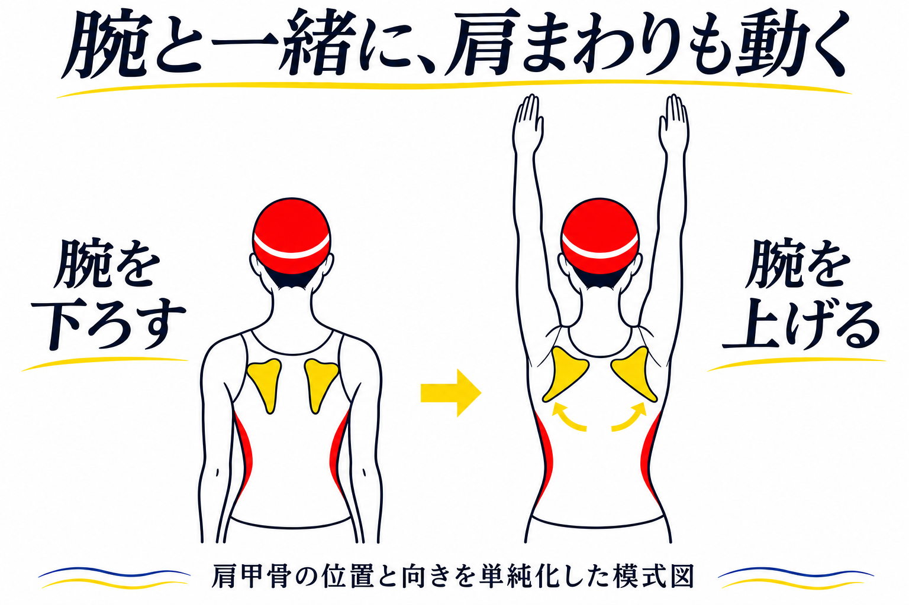
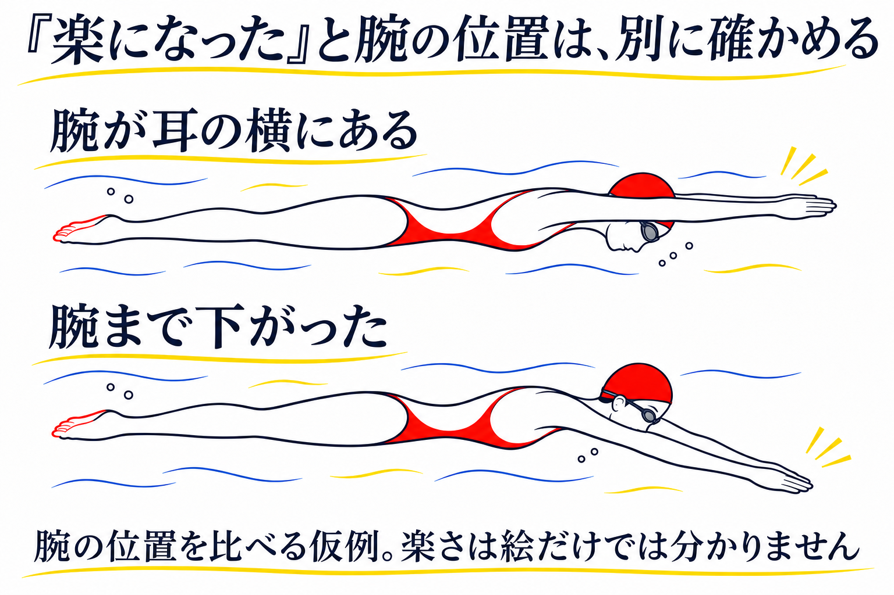

2026年11月18日 公開・更新
良い姿勢とは？ まっすぐ立つ形は、けのびでも正しい？

「良い姿勢」と聞くと、身長を測る時のように背を伸ばす姿を思い浮かべませんか。首を長くして、腰を反りすぎず、肩の力を抜く。その形を覚えて水に入れば、けのびもよくなるのでしょうか。
そもそも「良い姿勢」とは？
姿勢とは、頭・胴体・腕・脚などが、どんな位置や向きにあるかということです。立っている時だけでなく、歩く時や泳ぐ時にも姿勢があります。米国国立医学図書館の解説も、止まっている時と動いている時の姿勢を分けて説明しています。［7］
その位置や向きを保ったり、動作に合わせて調整したりする働きは「姿勢制御」と呼ばれます。体の並び方が「姿勢」、それを保つ・調整する働きが「姿勢制御」です。姿勢制御の研究では、環境や課題によって調整の仕方が変わると整理されています。［8］
では、どんな姿勢なら「良い」のでしょう。この記事では、「行いたいことを達成しやすい体の配置」を、良い姿勢を考える出発点にします。これは記事で用いる評価の考え方です。全員に共通する一つの形や角度を、正解として決めるものではありません。
たとえば、身長を測る時には高さを測るための姿勢をとります。その形をとれたことだけで、泳ぎやすさまで分かるわけではありません。けのびの目的は、壁を蹴って得た速さで、手足でかかずに滑って進むこと。そのために、体が水を受ける形と、その形を滑っている間に保てるかを考えます。
ただし、見た目が整っていること、本人が楽に感じること、よく進むことは別々の評価です。見た目だけで抵抗の小ささは分かりませんし、楽になっただけで速くなったとも言えません。ここでは健康への良し悪し全般ではなく、けのびでの形と滑り方を扱います。
判断の順序は、まず「今回は何をよくしたいか」を決め、次にその変化を確かめることです。たとえば「腕を伸ばした形を保ちながら、力みを減らしたい」なら、腕の位置と本人の楽さを別に見ます。滑り方までよくなったかは、さらに条件をそろえて確かめる必要があります。この例を、最後の章で具体的に考えます。
では、立つ時に覚えた「首を長くする」「腰を反りすぎない」「肩の力を抜く」は、けのびではどう考えればよいのでしょう。腕と肩の動き、体全体の形、力の使い方を順に見て、今の判断基準を具体的にしていきます。
腕を上げても、肩は下げたまま？
立つ姿勢からけのびへ移る時、最初に大きく変わるのは腕の位置です。体の横に下ろしていた両腕を、頭の先へ伸ばします。この時、腕だけが動いて、背中側の骨は同じ位置にとどまるのでしょうか。
次の図では、腕の高さと一緒に、背中の黄色い部分を見てください。肩甲骨という、背中の上の左右にある平たい骨の目印です。

無症状の成人12人を調べたBramanらの研究では、腕を頭上へ上げるにつれて、肩甲骨も上向きに回り、後ろへ傾く動きが観察されました。測ったのは、陸上で腕を上げ下げする時の骨の動きです。泳ぐ速さや「肩を下げる指導」の効果を比べた実験ではありません。［1］
それでも、立つ時に言われた「肩の力を抜く」を、腕を上げる時まで「肩甲骨を下へ押さえ続ける」と受け取ると、話が変わってしまうことは分かります。腕を運ぶ時には、肩まわりにも動きがあります。
ここでの答えは、腕の位置が変われば、肩まわりの位置も変わるということです。自分から肩を耳へ強く引き上げる指示ではありません。立っている時の肩の位置を、どんな動作でも守る目印にしない。では、腕を伸ばした後は、体のどこを見ればよいのでしょう。
腰の反りだけで、けのびは決まる？
「腰が反っているから、けのびが悪い」。そう言われると、腰だけを平らにしたくなるかもしれません。しかし、けのびで水を受けるのは腰一か所ではなく、腕から胴体、脚へ続く体全体です。
図の胸から腰、お尻へ続く線を、ゆっくりたどってみてください。途中で線が大きく曲がる例と、変化が小さい例を描いています。見る場所を広げるための図で、下の形を全員の正解とするものではありません。

ここで研究に聞きたいのは、二つの違う問いです。「自分の形を変えたら、滑り方も変わるか」。そして「他の人より腰が反っていたら、抵抗も大きいか」。似ていますが、前者は同じ人の変化、後者は人と人の違いを調べます。

同じ人の変化を調べたPapicらの研究では、全国レベルの泳者11人が、自分の映像を見ながら個別の助言を受けました。水深約1mで壁を蹴り、泳ぐ動作をせずに滑る、1.5秒間の平均速度を比較しています。助言前は毎秒1.80m、助言後は毎秒1.86m。グループの平均では、統計的に有意な差がありました。これは、得られた差を偶然のばらつきだけでは説明しにくいとする統計上の判定で、全員が同じだけ速くなったという意味ではありません。［2］
これは、姿勢全体への個別の働きかけの後に、短い区間の滑り方が変わった結果です。映像と言葉を組み合わせ、複数の点を調整しているため、「腰を平らにする」という一言だけの効果には分けられません。対照群のない直後の比較なので、誰でも同じだけ速くなる、長く練習すれば効果が続く、とも言えません。
人と人の違いを調べた奈良らの研究は、男子大学競泳選手23人が対象でした。陸上でうつぶせになり、腕を頭上へ伸ばした姿勢の腰の角度を測り、水面近くで体を引いた時の「抵抗係数」と比べています。抵抗係数は、速度などを考慮して抵抗の受けやすさを表す値です。調べた四つの速さでは、腰の反りが大きい人ほど抵抗係数も大きい、という統計的に有意な関係は見つかりませんでした。ただし、水中で背骨の角度を測ってはいないため、引かれている時も陸上と同じ形だったかは確認できません。［3］
この二つを、そのまま矛盾する結果とは読めません。自分の前後を比べることと、別の人どうしを比べることは違います。さらに、水深約1mでの滑走と水面近くでの牽引、滑る速度と抵抗係数という、条件と測定値の違いもあります。同じ実験の答えとして足し合わせることはできません。
他人より腰が反っているという一点だけでは、自分のけのびの良し悪しは決められない。一方、自分の形を見直す余地がないわけでもありません。腰の角度だけで採点せず、体全体と滑り方の変化を、条件をそろえて見る。これが二つの研究から整理できる見方です。
次に残るのは、その形をどうつくり、どう保つかです。見本の位置に腕が届かない時も、届くのに力んでしまう時も、同じ「力を抜いて」でよいのでしょうか。
届く範囲と、力みは別
腕を頭の先へ伸ばそうとしても、そこまで動かせない人がいます。反対に、その位置には届くけれど、強く力を入れて保っている人もいます。外から力がかかると、保っていた位置が変わりやすい場合もあります。「硬い」「柔らかい」という言葉だけでは、この違いが隠れてしまいます。
次の図は、手首を例にした三つの問いです。上から「どこまで動くか」「どう筋肉が働くか」「押された時にどれくらい形が変わるか」を分けて見てください。

動ける角度の範囲を可動域、筋肉の働きを筋活動、外から力を受けた時の変わりにくさを剛性と呼びます。専門語を覚えるよりも、三つが別の問いだと押さえることが大切です。よく動く関節でも、必要な場面では力を出せます。力を抜いたつもりでも、動ける範囲がすぐ広がるとは限りません。
「首・手首・足首を緩める」という覚え方も、この区別をしたうえで使う必要があります。同じ「首」という漢字が入っていても、三か所で同じ仕組みや効果が確かめられたわけではありません。
たとえば、訓練を積んだ泳者10人のドルフィンキックを調べたKuhnとLegerlotzの研究では、足首をテープで動きにくくした条件は、通常より速度が低くなりました。ただし、通常と、受動的なストレッチで動く範囲を増やした条件の速度差は有意ではありませんでした。これは動く範囲を変えた実験で、意識して脱力する指示を試したものではありません。［4］
この結果を「足首は力を抜くほど速い」、さらに「首も手首も同じ」と読み替えることはできません。けのびに戻れば、まず、届く範囲の問題か、力の使い方の問題か、外から力を受けた時の保ち方の問題かを分ける。全部に同じ言葉を当てはめないことが、次の手がかりになります。
では、動ける範囲が足りている時には、形を保つ力をできるだけ少なくすればよいのでしょうか。
形を保つ力は、少ないほどよい？
鉛筆で小さな丸を塗る時を思い浮かべてください。持つ力を全部なくせば鉛筆を保てません。かといって、指も腕も動かせないほど握り込めばよいわけでもありません。保ちたいものと、動かしたいものがあるからです。
図の上は、この感覚を考える日常の例えです。下は、大きな的と小さな的の比較。同じ腕の動きでも、求められる正確さが変わる場面を示しています。

Gribbleらは、20〜30歳の成人16人が腕を動かして大きさの違う標的を指す時の、筋肉の活動と動きの誤差を測りました。小さい標的を狙う条件では、肘を曲げる筋と伸ばす筋のように、反対向きに働く筋どうしの同時活動が多く、動きのばらつきは小さくなりました。一方、練習に伴って同時活動が減る傾向も見られました。［5］
力を入れて保つ働きにも、慣れるにつれてその力を減らすことにも、役割があります。ただし、これは陸上の標的課題です。けのびで何割の力を使うとよいかを決めたり、力を抜けば泳速が上がると証明したりした研究ではありません。
体幹の安定を整理したKiblerらの総説でも、体幹の位置に加えて、動きを制御することが定義に含まれています。「安定」という言葉も、ただ一枚の写真の形に固定し続ける意味には限りません。［6］
ここで残したいのは、力を抜いた量だけで、姿勢の良し悪しは決まらないという見方です。けのびで手足をかかずに形を保つことと、保つための働きまでなくすことは同じではありません。何を保ち、何を動かしたいのかに戻ると、力の役割を考えられます。けのびなら「楽になったか」と一緒に、「頭の先へ伸ばした腕などの位置はどうなったか」も見る。最後に、この二つを一つの場面で確かめましょう。
楽さ・形・滑り方を分ける
ここでは、「腕を頭の先へ伸ばした形を保ちながら、力みを減らせるか」を確かめる仮の場面を考えます。「首を楽に」と意識したら、本人は楽になった。でも横からの映像では、腕まで下がっていた。今回決めた課題に照らすと、何ができて、何がまだできていないのでしょう。
図では、体に対する腕の位置を比べてください。本人が楽に感じているかは、絵や映像だけでは分かりません。絵や映像で見えることと、本人の感じ方を分けるのが出発点です。

分かったのは、本人は楽になった一方、今回は保ちたかった腕の位置も変わったことです。図だけで「腕が下がると抵抗が増える」と判定したのではありません。楽になったことは残しながら、その楽さで、頭の先へ腕を伸ばした形も保てるかを次の問いにできます。「もっと抜く」か「前の力んだ形へ戻す」かの二択にする必要はありません。
もし楽になっても滑り方が変わらなければ、「楽さは変わったが、滑り方の改善はまだ確認できない」と整理できます。よく進んでも力みが増えたなら、「進んだ」と「楽に保てた」をまとめて成功にしない。どの点を改善したいかに戻って、次に比べることを選びます。これは研究で決まった採点法ではなく、変化を読み違えないための整理です。
さらに、滑り方は別に確かめます。遠くへ進んだ一回があっても、それだけで抵抗が減ったとは決まりません。壁を蹴った勢いや深さが変わっても、進む距離は変わるからです。姿勢の違いを見たいなら、変える点を絞り、蹴り方や深さ、比べる区間をできる範囲でそろえる。これは観察のための工夫で、自分の練習をそのまま研究と同じ条件にできるという意味ではありません。
頭の向きに絞って考えたい時は、No.6「けのびで見るのは前？ 下？」もつながります。本稿の「体全体を見る」という枠組みの中で、一か所を詳しく確かめるための補完記事です。
最初の問いに戻りましょう。まっすぐ立つ形を試すことは、自分がどこを動かし、どこに力を入れているかに気づく入口にはなります。でも、けのびでは腕の位置も、水から受ける力も変わります。立つ時の見本を守れたかだけでは、目的に合った姿勢かどうかは分かりません。
良い姿勢を探す時は、「どう見えるか」に「何をするためか」を足す。今回の仮例なら、楽になった部分は残し、腕の位置は確かめ直し、滑り方は条件をそろえて見る。そう考えると、一回の変化を丸ごと成功か失敗かに分けず、次に確かめることが見えてきます。